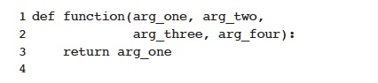
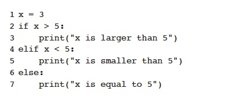
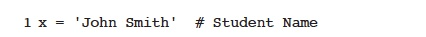
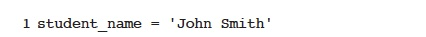
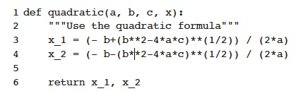
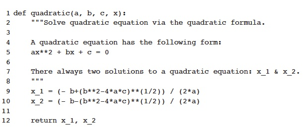
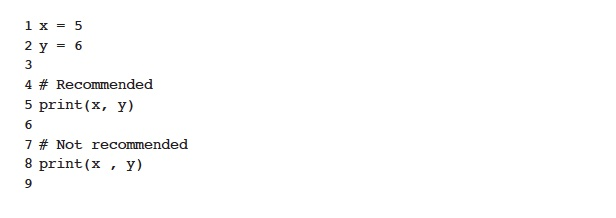
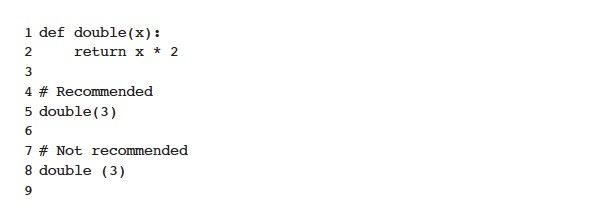

Just like when you write an essay for English or Social Studies, Python has a styleguide for formatting called PEP8. We format code because in the real world, code is more often read by other people than the original programmer. We format code to make it easier to read for other people. We can use built-in format checkers or websites like PEP8 online to check that our code adheres to the Python Style guide.
Variable names (also called identifiers) in Python have to follow the following rules:
Thus, KyloRen, IG88, and luke_Skywalker are valid variable names, but these are not: Luke+Leia_4_Evar (contains special character +), 2ManyStormTroopers (starts with a digit), and Han Shot First (contains spaces).
Here are some naming styles that are relevant to CS 20:
| Type | Naming Convention | Examples |
|---|---|---|
| Function | Use a lowercase word. Separate words using underscores to improve readability. | function, my_function |
| Variable | Use a lowercase word. Separate words using underscores to improve readability. | x, var, my_variable |
| Constant | Use an uppercase single letter, word, or words. Separate words with underscores to improve readability. | PI, CONSTANT, MY_CONSTANT |
The best way to name your objects in Python is to use descriptive names to make it clear what the object represents.
When naming variables, you may be tempted to choose simple, single-letter lowercase names, like x. But, unless you’re using x as the argument of a mathematical function, it’s not clear what x represents. Imagine you are storing a person’s name as a string, and you want to use string slicing to format their name differently. You could end up with something like this:
It seems natural to use the variables that we are used to in formulas, but we have to be careful to avoid l, O, and I. For example:
Both of the above example run the same but the second one is easier for a human to detect what the variables are.
Consider the following function that calculates area of a rectangle:
ar is not a very descriptive function name. Here's a better way:
Even though I abbreviated rectangle to rect, area_rect gives me a better idea of what the function does than ar.
How you lay out your code has a huge role in how readable it is. Vertical whitespace, or blank lines, can greatly improve the readability of your code. Code that’s bunched up together can be overwhelming and hard to read. Similarly, too many blank lines in your code makes it look very sparse, and the reader might need to scroll more than necessary.
For functions, have two blank lines above and below:
Use blank lines sparingly inside functions to show clear steps. Sometimes, a complicated function has to complete several steps before the return statement. To help the reader understand the logic inside the function, it can be helpful to leave a blank line between each step.
An even better way would be to put comments where the blank lines are:
PEP 8 suggests lines should be limited to 79 characters. This is because it allows you to have multiple files open next to one another, while also avoiding line wrapping. Of course, keeping statements to 79 characters or less is not always possible. PEP 8 outlines ways to allow statements to run over several lines.
If the code is contained in parentheses, Python will assume line continuation and you can just go to the next line:
If line breaking needs to occur around binary operators, like + and *, it should occur before the operator. This rule stems from mathematics.
Breaking before binary operators produces more readable code, so PEP 8 encourages it. Code that consistently breaks after a binary operator is still PEP 8 compliant. However, you’re encouraged to break before a binary operator.
Identation in Python, as we have learned, determines how statements are grouped together. For example, consider the following code:
For the above code, the indentation tells us which code is executed depending on which statement is True.
The indentation rules layed out by PEP8:
Tabbing can be much easier than the space bar so we will set up the editor so it inserts spaces when we tab.
You should use comments to document code as it’s written. It is important to document your code so that you, and any readers, can understand it. When you or someone else reads a comment, they should be able to easily understand the code the comment applies to and how it fits in with the rest of your code.
Some points to remember when adding comments:
Use block comments to document small sections of code instead of writing a comment for each line. Follow these rules for writing block comments:
Inline comments are on the same line as the code and should be used sparingly. Sometimes, inline comments can seem necessary, but you can use better naming conventions instead. Here’s an example:

Here, the inline comment does give extra information. However using x as a variable name for a person’s name is bad practice. There’s no need for the inline comment if you rename your variable:

Avoid comments, particularly inline comments, that state the obvious. For example:
It is obvious that x is multpied by 5 so it is not necessary to put it in the comments.
Document strings, or docstrings, appear in quotation marks on the first line of any function. Important rules to consider:
An example of a one-line docstring:

Example of a multiline docstring:

Whitespace in statements can make the code more readable by allowing us to visually group terms together in a statement. When performing a mathematic calculation, only put one space around the operation you will perform last.
Whitespace on either side of an operator can be useful for reading but whitepace at the end of punctuation or at the end of the line can cause errors. It is recommended that you add a space after a comma, semi-colon, or colon, but not after:

Do not put a space before brackets:

To make a long story short, ignore PEP8 rules like line length if it prevents your code from working properly. For example, don't break up a URL:
Source: Finer, Jasmine. “How to Write Beautiful Python Code With PEP 8.” Real Python, Real Python, 7 Nov. 2020, realpython.com/python-pep8/.